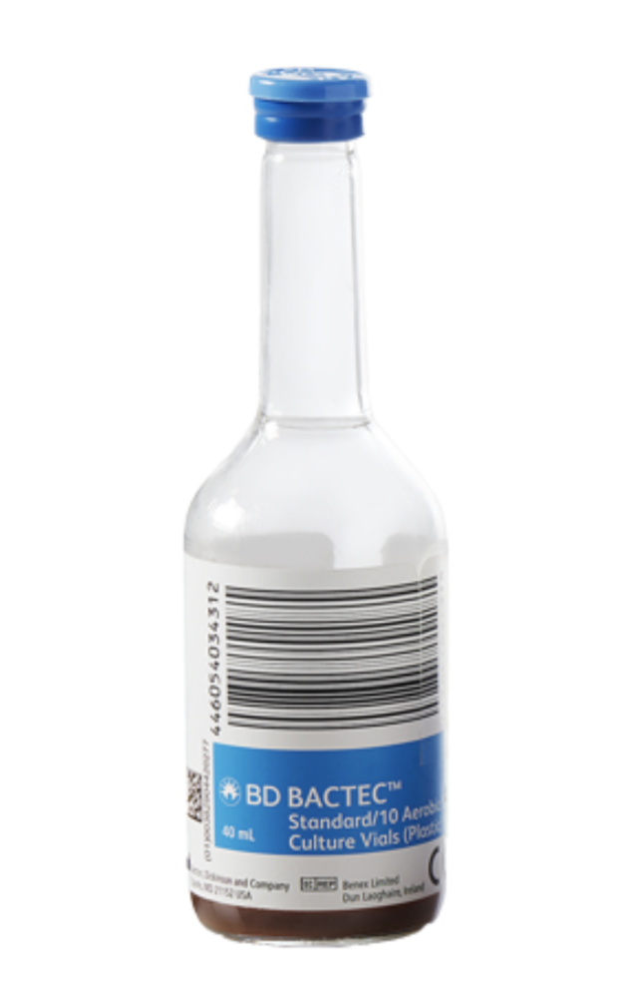

Background
The ACUTE project (Adapting Bloodculture systems to monitor antimicrobial efficacy) proposes to develop time-to positivity (Tpos)- a commonly measured variable in continuously monitored bloodculture systems used in clinical microbiology laboratories - as surrogate pharmacodynamic biomarker for monitoring antibiotic therapy.
The project will generate fundamental knowledge of how Tpos relates to frequently used pharmacodynamic indices (e.g.%T> MIC) using ceftazidime-avibactam therapy of KPC-carbapenemase producing Klebsiella pneumoniae (KPC-Kp) as proof-of-concept. This will be accomplished through two specific aims and several workpackages.
- The first specific aim will establish the quantitative relationships between Tpos and several representative KPC-Kp strains in the absence and after exposure to a range of clinically-relevant exposures of ceftazidime-avibactam.
- The second specific aim will measure in 20 critically-ill patients receiving ceftazidime-avibactam treatment for KPC-KP bloodstream infections using KPC-Kp “indicator” strains or the patient’s own isolate, and correlate Tpos results with blood concentration-time courses of ceftazidime and avibactam and PK/PD target attainment (free drug T>MIC ) simulated for each patient using Bayesian estimates of individual PK parameters from population pharmacokinetic models and LC/MS/MS analysis of ceftazidime-avibactam in serum.
This study will form the basis for the broader development and validation of Tpos as a surrogate pharmacodynamic biomarker for antimicrobial activity in serum, that could potentially be used for screening or monitoring antimicrobial efficacy in the critically-ill patients.
